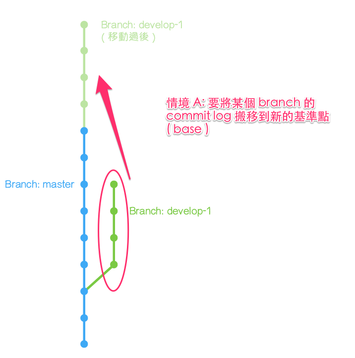

git rebase 指令
注意事項：只能用在未發佈的送交紀錄
- 重新定位 (整形？拉皮？)
- 修改內容的歷史記錄會接在要合併的分支後面，合併後的歷史記錄會比較清楚簡單，但是會比使用 merge 更容易發生衝突。
使用情境
- 重新指定送交的基礎位置
- 將歷史紀錄進行重新排序、編輯、移除、壓縮、拆散送交
優點
可以不產生分支線和額外的 merge commit
缺點
- 等於改變提交記錄，僅適合修改還沒發佈的本機端送交紀錄
- 移動的commit若屬於多個分支，則每個分支都要重新指定位置。
- 經常無法自動合併成功的情況，一直得手動排除衝突，過度追求線圖的清晰，反而失去 Git 的部分優點。
🤔 選擇用 merge 還是 rebase? 需要保留樹狀記錄就用 merge，反之則用 rebase。
常用範例
| 範例 | 說明 |
|---|---|
| git rebase master | |
| git rebase –continue | 解決衝突後，繼續rebase |
| git rebase –abort | 取消 rebase |
| git rebase -skip | 忽略 rebase 的 commit |
| git rebase -i HEAD^^ | 互動模式 rebase |
| git rebase --onto |
指定要從哪裡開始 |
- –continue：執行rebase 指令後出現衝突的情況，而且我們己經編輯好發生衝突的文件，接著就可以執行
git add指令， 把新的修改內容加入 Git 索引中，最後再執行這個指令，完成rebase的操作。 - –abort：如果執行 rebase 指令後出現衝突的情況，可以使用這個指令取消 rebase 的操作。 Git repo 會恢復到還沒有執行 rebase 之前的狀態。
- -skip：忽略一個原本要rebase的commit

互動模式
# Commands:
# p, pick = use commit
# r, reword = use commit, but edit the commit message
# e, edit = use commit, but stop for amending
# s, squash = use commit, but meld into previous commit
# f, fixup = like "squash", but discard this commit's log message
# x, exec = run command (the rest of the line) using shell
# d, drop = remove commit
語法結構
usage: git rebase [-i] [options] [--exec <cmd>] [--onto <newbase>] [<upstream>] [<branch>]
or: git rebase [-i] [options] [--exec <cmd>] [--onto <newbase>] --root [<branch>]
or: git-rebase --continue | --abort | --skip | --edit-todo
Available options are
-v, --verbose display a diffstat of what changed upstream
-q, --quiet be quiet. implies --no-stat
--autostash automatically stash/stash pop before and after
--fork-point use 'merge-base --fork-point' to refine upstream
--onto ... rebase onto given branch instead of upstream
-p, --preserve-merges
try to recreate merges instead of ignoring them
-s, --strategy ... use the given merge strategy
--no-ff cherry-pick all commits, even if unchanged
-m, --merge use merging strategies to rebase
-i, --interactive let the user edit the list of commits to rebase
-x, --exec ... add exec lines after each commit of the editable list
-k, --keep-empty preserve empty commits during rebase
-f, --force-rebase force rebase even if branch is up to date
-X, --strategy-option ...
pass the argument through to the merge strategy
--stat display a diffstat of what changed upstream
-n, --no-stat do not show diffstat of what changed upstream
--verify allow pre-rebase hook to run
--rerere-autoupdate allow rerere to update index with resolved conflicts
--root rebase all reachable commits up to the root(s)
--autosquash move commits that begin with squash
move commits that begin with squash!/fixup! under -i
--committer-date-is-author-date
passed to 'git am'
--ignore-date passed to 'git am'
--whitespace ... passed to 'git apply'
--ignore-whitespace passed to 'git apply'
-C ... passed to 'git apply'
-S, --gpg-sign[=...] GPG-sign commits
Actions:
--continue continue
--abort abort and check out the original branch
--skip skip current patch and continue
--edit-todo edit the todo list during an interactive rebase